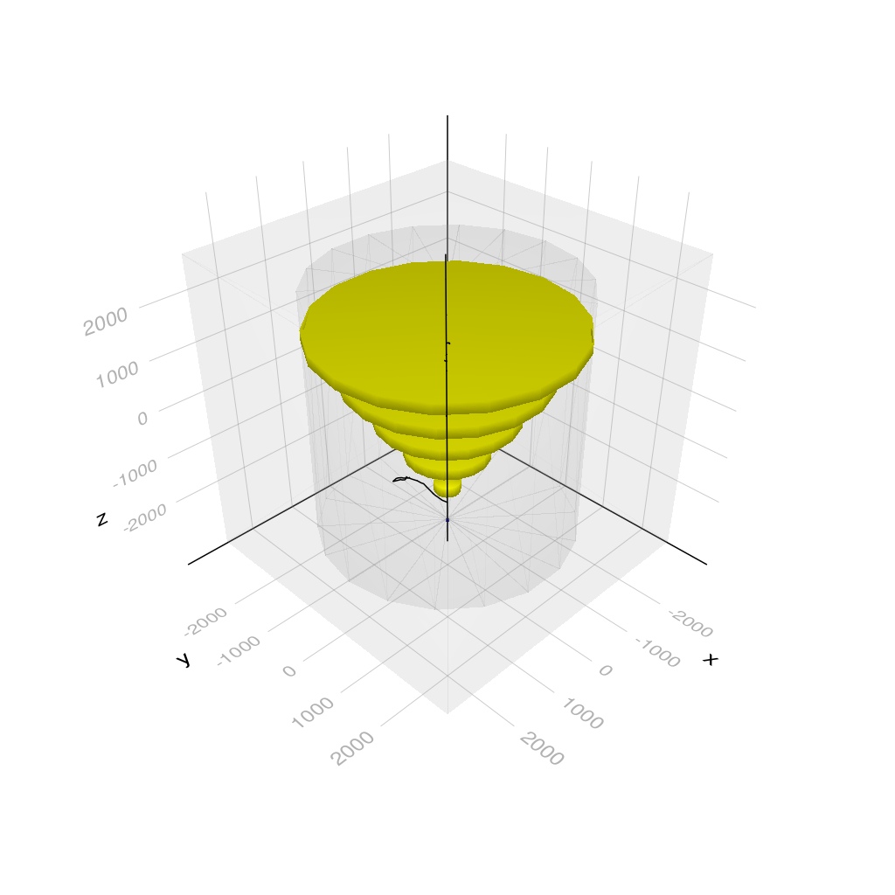

using Geant4
using Geant4.SystemOfUnits
#---Choose the Makie backend
#using GLMakie
#using WGLMakie
using CairoMakie
using GeometryBasics, Rotations, IGLWrap_jll # to force loding G4Vis extensionWARNING: using Geant4.get in module Main conflicts with an existing identifier.include(joinpath(@__DIR__, "../../../examples/basic/B2/DetectorB2a.jl"))#---Define Simulation Data struct------------------------------------------------------------------
mutable struct B2aSimData <: G4JLSimulationData
tracks::Vector{Vector{Point3{Float64}}} # vector of vector of step positions
end#---Step action------------------------------------------------------------------------------------
function stepaction(step::G4Step, app::G4JLApplication)::Nothing
tracks = app.simdata[1].tracks
p = GetPosition(GetPostStepPoint(step))
push!(tracks[end], Point3{Float64}(x(p),y(p),z(p)))
return
end
#---Tracking pre-action----------------------------------------------------------------------------
function pretrackaction(track::G4Track, app::G4JLApplication)::Nothing
tracks = app.simdata[1].tracks
p = GetPosition(track)[]
push!(tracks, [Point3{Float64}(x(p),y(p),z(p))])
return
end
#---begin-event-action----------------------------------------------------------------------------
function beginevent(::G4Event, app::G4JLApplication)::Nothing
empty!(app.simdata[1].tracks)
return
endbeginevent (generic function with 1 method)#--------------------------------------------------------------------------------------------------
#---Particle Gun initialization--------------------------------------------------------------------
#--------------------------------------------------------------------------------------------------
particlegun = G4JLGunGenerator(particle = "proton",
energy = 3GeV,
direction = G4ThreeVector(0,0,1),
position = G4ThreeVector(0,0,-2940.0))
G4JLGunGenerator("ParticleGun", Geant4.G4JLParticleGunData(nothing, "proton", G4ThreeVector(0.0,0.0,1.0), G4ThreeVector(0.0,0.0,-2940.0), 3000.0), Geant4.var"#init#23"(), Geant4.var"#gen#24"(), G4JLGeneratorAction[])#---Create the Application-------------------------------------------------------------------------
app = G4JLApplication(detector=B2aDetector(nChambers=5), # detector with parameters
simdata = B2aSimData([]), # simulation data structure
generator = particlegun, # particle gun generator
physics_type = FTFP_BERT, # what physics list to instantiate
stepaction_method = stepaction, # step action method
begineventaction_method = beginevent, # begin-event action (initialize per-event data)
pretrackaction_method = pretrackaction) # pre-tracking action
#---Configure, Initialize and Run------------------------------------------------------------------
configure(app)
initialize(app)
beamOn(app, 8)**************************************************************
Geant4 version Name: geant4-11-01-patch-01 [MT] (10-February-2023)
Copyright : Geant4 Collaboration
References : NIM A 506 (2003), 250-303
: IEEE-TNS 53 (2006), 270-278
: NIM A 835 (2016), 186-225
WWW : http://geant4.org/
**************************************************************
Checking overlaps for volume Target:0 (G4Tubs) ... OK!
Checking overlaps for volume Tracker:0 (G4Tubs) ... OK!
Checking overlaps for volume Chamber_PV:1 (G4Tubs) ... OK!
Checking overlaps for volume Chamber_PV:2 (G4Tubs) ... OK!
Checking overlaps for volume Chamber_PV:3 (G4Tubs) ... OK!
Checking overlaps for volume Chamber_PV:4 (G4Tubs) ... OK!
Checking overlaps for volume Chamber_PV:5 (G4Tubs) ... OK!world = GetWorldVolume()
tracks = app.simdata[1].tracks;beamOn(app, 1)
fig = Figure(resolution=(1024,1024))
s = LScene(fig[1,1])
Geant4.draw!(s, world)
for t in tracks
lines!(t)
end
display(fig)
CairoMakie.Screen{IMAGE}